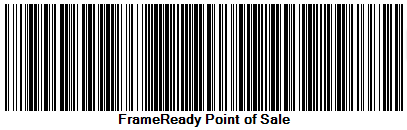
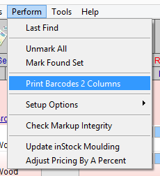

Barcodes Overview
Barcode support is included free in all our family of products. You will need to purchase a barcode reader; many models are available online.
Barcode Support in FrameReady

-
UPC (Universal Product Code) is the barcode data supplied by some vendors on their samples (see below for vendors that provide electronic UPC data to FrameReady).
-
Moulding, Matboard, Mounting, Glazing, Fabric and Product items can be assigned a numeric UPC code. However, only Moulding and Matboard can be scanned onto a Work Order.
-
If a barcode is unavailable, e.g. not on the moulding or matboard sample, then FrameReady uses the Item number to generate and print a barcode for you.
Caution: Long item numbers/names will be converted into long barcodes and may not scan reliably or not at all.
You can use the included Photo Capture app (for FileMaker Go on iOS devices) to scan in UPC barcodes. See: iPhone and iPad Photo Capture App
-
You can scan barcodes directly onto an Invoice. See: Invoices Rapid Entries Screen
-
When you scan a barcode, the device sends a little package of data back to the computer. The information is in the form of numbers and/or characters; just as if you had entered it from the keyboard.
You must place the cursor into a field before scanning (in the same way you must to put the cursor into a field before typing).
FrameReady uses Barcoding in Four Areas
Barcodes on Frame and Mat Corner Samples
-
Most vendors now place barcodes on their moulding and matboard corner samples.
-
FrameReady allows for easy entry of these barcodes into the Work Order for instant pricing. This feature promotes speed and accuracy.
Barcodes as Shop Management Tools
-
FrameReady allows you to store and read any product assigned a barcode.
-
FrameReady is equipped with label creation software to produce your own stylized labels for all your retail products and framed art.
-
Barcodes also appear on the printed Work Order can be used as a convenient way to call up a particular Work Order on the computer screen, for example, from the production room.
Barcodes on Retail Products
-
FrameReady allows you to store and read any readymade product or giftware with barcodes.
-
FrameReady is equipped with label creation software to produce your own stylized labels for all your retail products and framed art.
-
When you create a new product in the Products file, FrameReady automatically generates a new Item #. If your retail product has an Item # that is different from the UPC number (i.e. barcode), then you can change the item number generated by FrameReady by typing over it and entering the number you want to use. Then click in the UPC field and scan the barcode.
Barcodes for Frame Jobs
-
Create barcode labels for finished packages or for items being shipped to another location to be framed.
Using Barcodes
How to Add Your Own Barcode Number
Caution: If you wish to enter your own barcode number into the UPC field in the Price Codes file, then you must make sure the number is unique and not already assigned to another item -- otherwise the wrong item may be entered.
-
In the Price Codes, perform a find for the UPC number to ensure that it does not already exist.
-
Locate the item.
-
It is recommended that your barcode number be 5 digits or greater (most UPC numbers are 12 digits).
You could also use the original item number as the barcode number -- provided that it fits onto your label and is numeric only. -
Enter the number in the UPC field or, if you are scanning an existing barcode, place the cursor in the UPC field and scan the item.
How to Print Barcode Labels
-
Perform a Find for the Price Code items.
-
In the menu bar, click Perform and select Print Barcodes 2 Columns.

A print preview appears. -
Be sure to use Avery 5167 labels.
These are "Return Address Labels", 1/2" x 1-3/4", 80 per Sheet (4 columns) -
Click Continue.
How to Locate a Product using a Barcode
If you create a new product item in the Products file, then FrameReady automatically generates a new Item #.
If your retail product Item # is different from the UPC number (i.e. barcode), then you can change the item number by typing over it and entering the number you want to use. Then click in the UPC field and scan the barcode into it.
-
On the Main Menu, in the Products section, click the Find Product button.
The Enter Search Criteria screen appears with the cursor blinking in the Item/UPC field. -
Scan the barcode from the retail product into the UPC field.
-
If no a match is found, then click Modify Find and scan the barcode in the Item field.
Tip: products can be added onto an Invoice using either the UPC number or the Item number.
When searching for a product, use the Item field to find an item # and the UPC field to find a barcode.
FrameReady Cannot Find a Barcode
If the barcode you scan is not in the Price Codes file, then a "No match can be found for this…" message appears on the Work Order.
-
Click Revert Field then use the search button instead and enter the first few digits of the number.
-
To resolve the missing barcode, go to the Price Codes file and perform a Find for the item using the number, e.g. C1610 and then check the number in the UPC field.
-
If the UPC field is blank, then put the cursor into the UPC field and scan the barcode number into it.
-
If the UPC field contains a number, then make sure the barcode number in FrameReady matches the printed one. If not, then clear the UPC field and go to Step 3.
Note: the UPC field is not affected by vendor updates; if you change the barcode number, updating your vendors will not revert the field back to the original barcode (unless you use the Control key + Proceed button method).
The Barcode Shows the Wrong Item
If the barcode you scan onto a Work Order shows the incorrect item, then follow these steps:
-
Search the Price Codes file for the UPC number and make sure that only one item is using that number.
Are there multiple items using the same number? -
Search the Price Codes file for the correct item and then examine the UPC field.
Does the UPC field match the barcode number on the sample? -
Open a generic text editor, click the cursor into it and scan the barcode; a series of numbers should appear.
Do the scanned-in numbers exactly match the sample's number?
Cannot Find Barcode Number on a Corner Sample
If the UPC field is blank in FrameReady, but the sample has a manufacturer’s barcode attached, then you can scan in the barcode for that item.
-
In the Price Codes file, do a Find for the item (by Item #).
-
Click into the UPC field.
-
Scan or type the barcode number from the back of the corner sample into the UPC field.
Now you can either enter the moulding # or UPC number into on the Work Order. This method works for both moulding and matboard.
OR…
-
If there are a large number of records with blank UPC fields, then you may want to consider another method. UPC are entered automatically for new moulding/mats when you perform a vendor update (where applicable, see below for vendors that include UPC data). If the item is already in your file, then the UPC code will not be updated.
-
If you delete the records which do not contain UPC codes and then perform the update, the UPC code field will be updated. This option would not be advisable if you have inventory in stock for the items.
Vendors who Supply UPC Data
Subject to change:
-
Bainbridge
-
Crescent
-
Larson Juhl
-
Ludwidg
-
Nielsen
-
Nurre Caxton
-
Omega
-
Peterboro
-
Roma
Barcodes on Printed Work Orders, Art ID Tags, Product Labels
Barcodes appear on printed Work Orders, Art ID tags,Product Labels, and can be used as a convenient way to call up a particular Work Order on the computer screen, for example, from the cutting room.
-
On the Main Menu, click the Find Work Order button.
-
The Enter Search Criteria screen appears with the cursor blinking in the WO # field.
-
Scan the barcode from the printed Work Order.
The Work Order appears if a match exists. You can either select to Modify Find or Cancel.
© 2023 Adatasol, Inc.